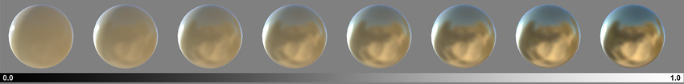
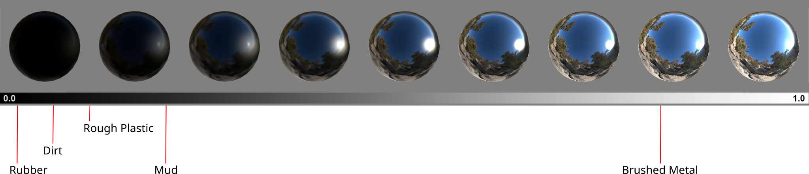
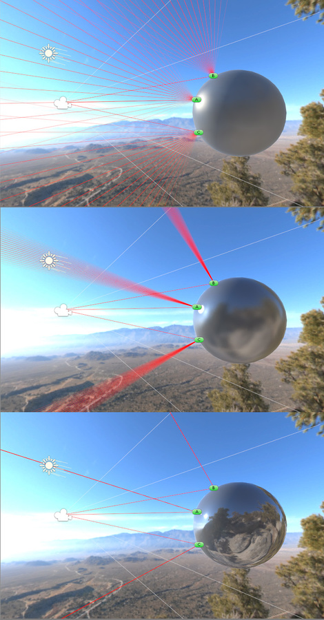
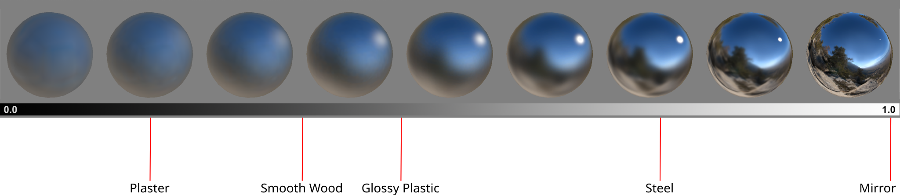

Prebuilt Unity shadersA program that runs on the GPU. More info
See in Glossary have two different ways of calculating reflections, known as workflows:
The workflow controls two types of reflections:
In both workflows, you can also adjust the blurriness or sharpness of reflections using a smoothness value.
Note: You can use either workflow for any material. The metallic workflow isn’t only for metallic materials.
In the metallic workflow, the following applies:
Values between 0 and 1 blend these two results.

For more information, refer to Configure reflections in prebuilt shaders.
In the specular workflow, a specular colorThe color of a specular highlight.
See in Glossary value directly controls the intensity and color of reflections on the surface. This makes it possible to have a specular reflection that’s a different color to diffuse reflection.
A black specular color means no reflections, while a white specular color means full reflection.

For more information, refer to Configure reflections in prebuilt shaders.
In both workflows, a smoothness value controls the clarity of the specular effect.
Smoothness represents the microsurface detail of the material. A low smoothness value means the surface is microscopically rough with many different surface angles, so light rays bounce off at a wide range of angles, and fewer reflections reach the cameraA component which creates an image of a particular viewpoint in your scene. The output is either drawn to the screen or captured as a texture. More info
See in Glossary. A high smoothness value means the surface is microscopically smooth like a mirror, so light rays bounce off at a narrow range of angles, and more reflections reach the camera.

As a result, a low smoothness value produces blurry, diffuse reflections, while a high smoothness value produces clear, sharp reflections.

For more information, refer to Configure reflections in prebuilt shaders.